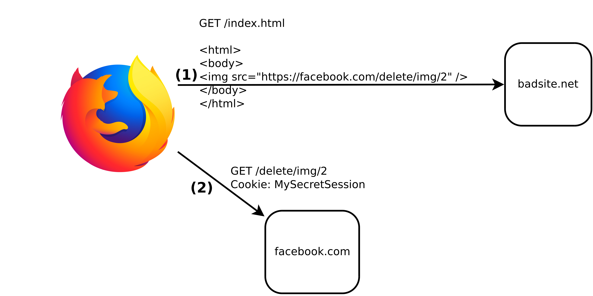
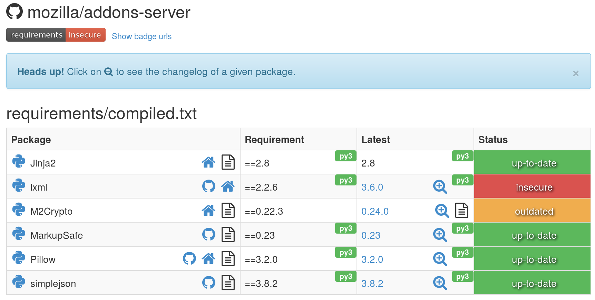

Slides at
jvehent.github.io/modern-webappsec/
|


with some amount of effort

Hacker's favorite way to blowing up your webapps since....
pretty much forever.

Cross-site scripting (XSS) is a security exploit which allows an attacker to inject into a website malicious client-side code. This code is executed by the victims and lets the attackers bypass access controls and impersonate users.
<script type='text/javascript'>alert('xss');</script>

Content-Security-Policy: default-src *; object-src 'none'
Disable the use of unsafe inline/eval,
allow everything else except plugin execution.
func setResponseHeaders() Middleware {
return func(h http.Handler) http.Handler {
return http.HandlerFunc(func(w http.ResponseWriter, r *http.Request) {
w.Header().Add("Content-Security-Policy",
"default-src *; object-src 'none'")
w.Header().Add("X-XSS-Protection",
"1; mode=block")
h.ServeHTTP(w, r)
})
}
}
You need to return the CSP header on every HTTP response.

This is easy: DON'T REFLECT IT ON YOUR MAIN ORIGIN!
Put user generated data on a separate domain that doesn't have cookies, and insert it on your main site with an iFrame.
This prevents UGC from having access to the origin.

This is (partly) why Facebook puts user images on "fbcdn.net"
Cookies are well protected in the browser, if you use them the right way. The rule of thumb:
SameSite is a new cookie attribute that tells the browser to only send the cookie back to the origin is was set from.
SameSite prevents third-party sites from forcing you to send requests with your cookies. It's like a CSRF token, only nicer.
Don't store user passwords, don't end up on this list.

Let someone else do identity management for you.

Benefits of delegating identity management:
Breaking news: you're probably pulling half the internet in your webapp at every build.

At least make sure it's up to date.
A pre-requisite to any website nowadays.


Many web servers and providers now have good defaults configurations. Trust, but verify!"

Don't make up your own, it's too time consuming

Four main types of security tests:
Automated tools that spider your website and apply series of tests to each resource discovered.

Spidering/Discovering all resources can be hard (particularly on modern webapps), so another option is to proxy browser traffic through the scanner.

Inject junk into the interfaces of an app to make it crash.

Analyse the source code for security issues.
$ bandit -r src/github.com/Kinto/kinto
Severity: High Confidence: High
Location: src/github.com/Kinto/kinto/kinto/plugins/accounts/scripts.py:36
>> Issue: [B322:blacklist] The input method in Python 2 will read from
standard input, evaluate and run the resulting string as python source
code. This is similar, though in many ways worse, then using eval.
On Python 2, use raw_input instead, input is safe in Python 3.
35 print('Username should match {0!r}, please try again.'.format(validator.regexp))
36 username = input('Username: ')
Static code analysers exist for many languages: bandit for python, eslint for javascript, gas for golang, etc.

Don't deploy to prod unless the security tests pass in dev.
test:
override:
- docker run mozilla/cutefox
background: true
# pull down the ZAP docker container
- docker pull owasp/zap2docker-weekly
# Run ZAP against the application
- >
docker run -t owasp/zap2docker-weekly zap-baseline.py
-t http://172.17.0.2:8080/
PASS: Absence of Anti-CSRF Tokens [40014]
WARN: Web Browser XSS Protection Not Enabled [10016] x 3
http://172.17.0.2:8080/
http://172.17.0.2:8080//robots.txt
http://172.17.0.2:8080//sitemap.xml
At a minimum, have a bug bounty program!

As soon as you have the budget, hire specialists to audit your website. Ideally, make that report public too.

Unless you're a big shop, it's much safer to outsource:
Heroku, AWS ElasticBeanstalk, Google Cloud, etc.